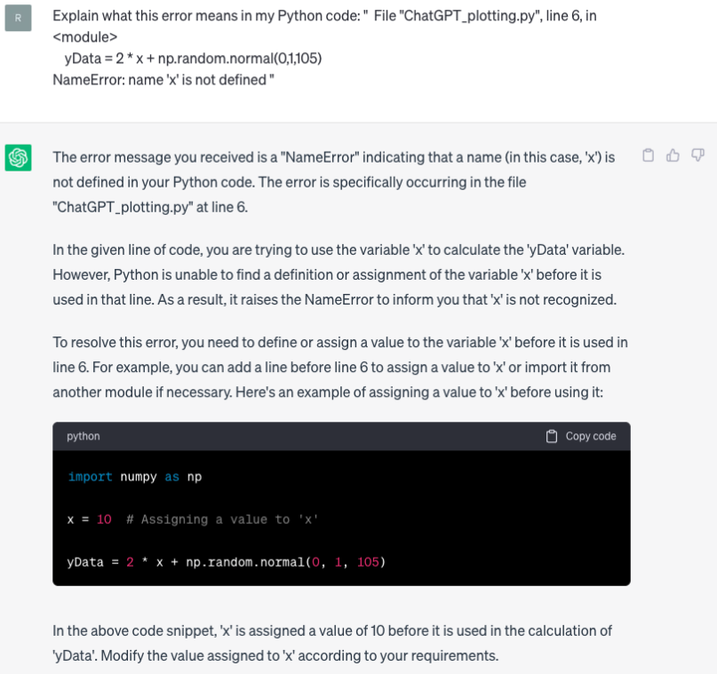
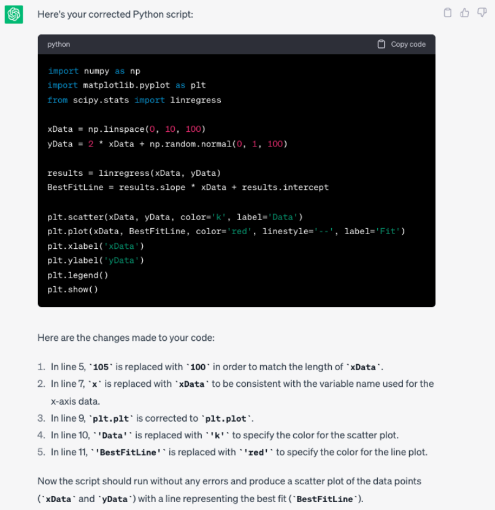

Artificial Intelligence (AI)#
In the not too distant past, artificial intelligence was a pretty abstract concept to most and its use cases were typically unknown to the general public. In recent years AI has exploded into our lives and is becoming more commonplace and at an accelerating rate - you will have no doubt noticed that snapchat now hosts an AI chatbot.
A particularly interesting AI tool is ChatGPT. Open AI states “We’ve trained a model called ChatGPT which interacts in a conversational way. The dialogue format makes it possible for ChatGPT to answer followup questions, admit its mistakes, challenge incorrect premises, and reject inappropriate requests.”
Within the department, we believe that we should empower students by teaching them how to responsibly use AI tools as part of their workflow. This does not mean that we are giving students the green light to get AI to write their essays and complete their assignments, instead we will teach you how to responsibly use AI tools in a way that does not compromise the credibility of your degree or your understanding of the topics that we cover. Understanding what we do is fundamental at all stages!
Warning: AI tools are powerful, but they are not omnipotent or omniscient. When using an AI tool, do not take its output at face value. Instead, critically assess what it outputs, regenerate responses to see if they change, and research the topics you are exploring with AI via traditional means. AI language tools can articulate information effectively and convincingly, but are also prone to making things up or reporting incorrect information so take a sceptical view of what they say.
Debugging with AI#
Although there are many AI tools to choose from, in this session we will focus on how we may use ChatGPT to aid in our programming, in part because you are able to freely access it through CoCalc, but also because it is quite good at Python. You can access ChatGPT directly if you create an account with OpenAI, but be warned that it is not always available to use at busy times.
Below is a simple plotting script, let’s use ChatGPT to debug this code:
import numpy as np
import matplotlib.pyplot as plt
from scipy.stats import linregress
xData = np.linspace(0,10,100)
yData = 2 * x + np.random.normal(0,1,105)
results = linregress(xData,yData)
BestFitLit = (results.slope * x) + results.intercept
plt.scatter(x, y, color = 'k', linestyle = ' ', label = Data)
plt.plt(x, BestFitLine, color = 'Red', linestyle = '--', marker = ' ', label = 'Fit')
plt.xlabel('xData')
plt.ylabel('yData')
plt.legend()
plt.show()
---------------------------------------------------------------------------
NameError Traceback (most recent call last)
<ipython-input-1-515eae5ba70e> in <module>
4
5 xData = np.linspace(0,10,100)
----> 6 yData = 2 * x + np.random.normal(0,1,105)
7
8 results = linregress(xData,yData)
NameError: name 'x' is not defined
If we run this code, we are greeted with an error message. Let’s pretend that we cannot identify the mistake ourselves… One way I can use chatGPT to debug this code is to ask it to explain the error to me:

This method is useful as ChatGPT will explain to us what the mistake is and how we can fix it. Unfortunately, our script contains many mistakes and identifying them this way may be time consuming - instead let’s provide ChatGPT with our script and ask it to identify and correct any mistakes:

It is now our responsibility to read through the script generated and ensure that the mistakes identified and corrections made are appropriate! Also take note of the errors that we initially made - did you spot them all?
The two methods above can be used in conjunction with one another - sometimes it may be useful to have in depth explanations provided for specific issues to aid our understanding, whereas in other instances it is useful to simply have an expert debugger on hand.
Prompt Engineering#
The use of AI in programming is not limited to debugging our code… we can also use it to generate simple code that would otherwise be routine and time consuming. Let’s imagine that we have two sets of linear data that need fitting and plotting. We can write a simple script to do this ourselves, or we can save some time and ask ChatGPT to do this for us.
When doing this, we should be clear and specific about what we would like ChatGPT to do. Compare the two starting prompts and associated outputs.
Prompt 1: “I need to plot some data in Python. Write me a script.”
# Output 1
import matplotlib.pyplot as plt
# Sample data
x_values = [1, 2, 3, 4, 5]
y_values = [2, 4, 6, 8, 10]
# Plot the data
plt.plot(x_values, y_values)
# Customize the plot
plt.title("Sample Data")
plt.xlabel("X-axis")
plt.ylabel("Y-axis")
# Display the plot
plt.show()
The script generated is certainly useful and does what I asked it to do, but if I am more specific when writing my prompt, I should be able to achieve a better result.
Prompt 2: “I have two sets of xy data saved in two separate csv files. I would like you to write a python script that imports the data from the csv files, fits each set of data using script.stats.linregress, and plots both sets of data on a single scatter plot. The scatter plot should contain a legend, grid lines and axis titles. The line of best fit for each data set should be a similar colour to the data markers, but clearly visible.”
# Output 2
import csv
import matplotlib.pyplot as plt
import scipy.stats as stats
# Function to import data from a CSV file
def import_data_from_csv(filename):
x_data = []
y_data = []
with open(filename, 'r') as file:
csv_reader = csv.reader(file)
next(csv_reader) # Skip the header row
for row in csv_reader:
x_data.append(float(row[0]))
y_data.append(float(row[1]))
return x_data, y_data
# Import data from CSV files
file1 = 'data1.csv'
file2 = 'data2.csv'
x_data1, y_data1 = import_data_from_csv(file1)
x_data2, y_data2 = import_data_from_csv(file2)
# Fit data using scipy.stats.linregress
slope1, intercept1, _, _, _ = stats.linregress(x_data1, y_data1)
slope2, intercept2, _, _, _ = stats.linregress(x_data2, y_data2)
# Plot the data and regression lines
plt.scatter(x_data1, y_data1, color='blue', label='Data 1')
plt.scatter(x_data2, y_data2, color='red', label='Data 2')
# Plot regression lines
line_color1 = 'lightblue'
line_color2 = 'lightcoral'
plt.plot(x_data1, [slope1 * x + intercept1 for x in x_data1], color=line_color1, label='Line of Best Fit 1')
plt.plot(x_data2, [slope2 * x + intercept2 for x in x_data2], color=line_color2, label='Line of Best Fit 2')
# Add legend, grid lines, and axis titles
plt.legend()
plt.grid(True)
plt.xlabel('X Data')
plt.ylabel('Y Data')
# Display the plot
plt.show()
This script is much more sophisticated!
Closing Remarks#
Above we have demonstrated the power of AI, but I again emphasise that you must be very cautious when using it! Also the lines of best fit are difficult to see…
You may be asking why we spent 4 weeks learning to code Python to fit and plot data when we can do it so easily using AI. The answer is simple: we must understand a topic to be able to use AI responsibly!
Plotting and fitting data is relatively simple, but as you begin to use Python for complex analysis you will need to be able to critically assess if what ChatGPT (or any other AI tool) proposes is appropriate and correct. In the example above, without prior knowledge of Python we would not truely be able to critically assess whether or not the code produced by ChatGPT was appropriate to use.
Activities#
Debugging#
From the previous activity, take the code from the kinetic energy and velocity task and feed it into ChatGPT in order to effectively debug the code:
Write your prompt in such a way that the AI lists all of the errors in the code and how to fix them.
From the initial series of errors output by the code, get the AI to explain what several of the errors mean in order to aid your understanding of why the errors occur.
Efficiency Optimization#
One of the disadvantages of using Python as a coding language is that it can be slow when compared to other programming languages. For this task:
Take the code from the superposition of waves activity and get chatGPT to analyse the code and rewrite it so that it runs more efficiently.
Review the changes it proposes, look at the code output to see how the changes it suggested have been implemented.
Note down a key change that you may wish to implement in your coding in the future for improved efficiency.
Prompt Engineering#
As we noted above, being able to effectively engineer a prompt is a vital skill when using AI. In this activity you will be required to be a little creative. Previously, we wrote a snippet of code to help us visualise the superposition of standing waves, your task now is to:
Use AI to write some code that helps visualise the superposition of travelling waves as a function of time. The travelling waves takes the form:
\(\Psi=\Psi_0 sin(kx-\omega t)\), where \(\omega=vk\) and \(k=\frac{2\pi}{\lambda}\).
Save the output as a .gif file.
Finally, review the content you have covered in your lectures this far and use AI to help you visualise another concept of your choice.
This activity builds upon the concepts we have already covered (functions, plotting, etc.), but we will now use AI to help us further by incorporating animation. The gif I produced is shown below (I have never animated using Python before either!).